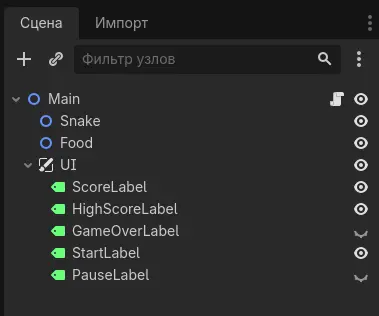

Начнем с создания сцены. Воссоздайте структуру, показанную на скриншоте ниже, у себя в редакторе.

Теперь давайте изучим устройство нашей сцены. Она базируется на главном узле (Main), внутри которого находятся вложенные узлы:
Задайте каждому элементу интерфейса подходящее содержимое (например, для ScoreLabel в поле text впишите «Score: 0»). Позже мы будем управлять этими узлами через код.
Теперь, когда структура сцены готова, можно приступить к написанию кода. Ниже представлен пошаговый урок, который поможет реализовать все основные механики игры.